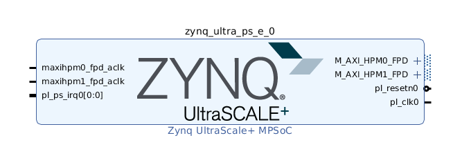

Step 1: Create the Vivado Hardware Design and Generate XSA¶
Create Base Vivado Project from Preset¶
Source <Vitis_Install_Directory>/settings64.sh, and call Vivado out by typing “vivado” in the console.
Create a Vivado project named zcu104_custom_platform.
a) Select File->Project->New.
b) Click Next.
c) In Project Name dialog set Project name tozcu104_custom_platform.
d) Click Next.
e) Leaving all the setting to default until you goto the Default Part dialog.
f) Select Boards tab and then select Zynq UltraScale+ ZCU104 Evaluation Board
g) Click Next, and your project summary should like below:
h) Then click FinishCreate a block design named system.
a) In Project Manager, under IP INTEGRATOR, select Create Block Design.
b) Change the design name tosystem.
c) Click OK.Add MPSoC IP and run block automation to configure it.
a) Right click Diagram view and select Add IP.
b) Search forzynqand then double-click the Zynq UltraScale+ MPSoC from the IP search results.
c) Click the Run Block Automation link to apply the board presets.
In the Run Block Automation dialog, ensure the following is check marked:All Automation
Zynq_ultra_ps_e_0
Apply Board Presets
d) Click OK. You should get MPSoC block configured like below:

Note: At this stage, the Vivado block automation has added a Zynq UltraScale+ MPSoC block and applied all board presets for the ZCU104. For a custom board, please double click MPSoC block and setup parameters according to the board hardware. Next we’ll add the IP blocks and metadata to create a base hardware design that supports acceleration kernels.
Customize System Design for Clock and Reset¶
Re-Customizing the Processor IP Block
a) Double-click the Zynq UltraScale+ MPSoC block in the IP integrator diagram.
b) Select Page Navigator > PS-PL Configuration.
c) Expand PS-PL Configuration > PS-PL Interfaces by clicking the > symbol.
d) Expand Master Interface.
e) Uncheck the AXI HPM0 FPD and AXI HPM1 FPD interfaces.
f) Click OK.
g) Confirm that the IP block interfaces were removed from the Zynq UltraScale+ MPSoC symbol in your block design.
Note: This is a little different from traditional Vivado design flow. In order to make AXI interfaces available in Vitis platform, you should disable these interfaces at Vivado IPI platform and enable them at platform interface properties. We will show you how to do that later
Add clock block:
a) Right click Diagram view and select Add IP.
b) Search for and add a Clocking Wizard from the IP Search dialog.
c) Double-click the clk_wiz_0 IP block to open the Re-Customize IP dialog box.
d) Click the Output Clocks tab.
e) Enable clk_out1 through clk_out3 in the Output Clock column, rename them asclk_100m,clk_200m,clk_400min the Port Name column, and set the Requested Output Freq as follows:clk_100m to 100 MHz.
clk_200m to 200 MHz.
clk_400m to 400 MHz.
f) At the bottom of the dialog box set the Reset Type to Active Low.
g) Click OK to close the dialog.
The settings should like below:
Note: So now we have set up the clock system for our design. This clock wizard uses the pl_clk as input clock and generates clocks needed for the whole logic design. In this simple design, we would use 100MHz clock as the axi_lite control bus clock. 200MHz and 400MHz clocks are reserved for DPU AXI interface clock and DPU core clock during design linking phase. You are free to modify the clock quantities and frequency to fit your target design. We’ll setup the clock export in future steps. Before that, we need to create reset signals for each clock because they are needed in clock export setup.Add the Processor System Reset blocks:
a) Right click Diagram view and select Add IP.
b) Search for and add a Processor System Reset from the IP Search dialog
c) Add 2 more Processor System Reset blocks, using the previous steps; or select the proc_sys_reset_0 block and Copy (Ctrl-C) and Paste (Ctrl-V) it twice in the block diagram
d) Rename them asproc_sys_reset_100m,proc_sys_reset_200m,proc_sys_reset_400mby selecting the block and update Name in Block Properties window.Connect Clocks and Resets:
a) Click Run Connection Automation, which will open a dialog that will help connect the proc_sys_reset blocks to the clocking wizard clock outputs.
b) Enable All Automation on the left side of the Run Connection Automation dialog box.
c) Select clk_in1 on clk_wiz_0, and set the Clock Source to /zynq_ultra_ps_e_0/pl_clk0.
d) For each proc_sys_reset instance, select the slowest_sync_clk, and set the Clock Source as follows:proc_sys_reset_100m with /clk_wiz_0/clk_100m
proc_sys_reset_200m with /clk_wiz_0/clk_200m
proc_sys_reset_400m with /clk_wiz_0/clk_400m
e) On each proc_sys_reset instance, select the ext_reset_in, set Board Part Interface to Custom and set the Select Manual Source to /zynq_ultra_ps_e_0/pl_resetn0.
f) Make sure all checkboxes are enabled, and click OK to close the dialog and create the connections.
g) Connect all the dcm_locked signals on each proc_sys_reset instance to the locked signal on clk_wiz_0.
Then the connection should like below:
Click Window->Platform interfaces, and then click Enable platform interfaces link to open the Platform Interfaces Window.
Setup properties for clock outputs of clk_wiz_0.
a) Select each clock under clk_wiz_0 in the Platform Interface Properties
b) In the General tab, enable it
c) In the Options tab, set the id’s of clk_{100,200,400}m to {2,1,0}, and enable is_default for clk_200m only
Now we have added clock and reset IPs and enabled them for kernels to use
Add Interrupt Support¶
V++ linker can automatically link the interrupt signals between kernel and platform, as long as interrupt signals are exported by PFM.IRQ property in the platform. For simple designs, interrupt signals can be sourced by processor’s pl_ps_irq. We’ll use AXI Interrupt Controller here because it can provide phase aligned clocks for DPU. We’ll enable AXI HPM0 LPD to control AXI Interrupt Controller, add AXI Interrupt Controller and enable interrupt signals for PFM.IRQ. Here are the detailed steps.
In the block diagram, double-click the Zynq UltraScale+ MPSoC block.
Select PS-PL Configuration > PS-PL interfaces > Master interface.
Select the AXI HPM0 LPD check box, keep the AXI HPM0 LPD Data width settings as default 32.
We use AXI HPM0 LPD mainly for controlling purpose. It only needs to read write 32 bit control registers.
Click OK to finish the configuration.
Connect maxihpm0_lpd_aclk to /clk_wiz_0/clk_100m.
Right click Diagram view and select Add IP, search and add AXI Interrupt Controller IP.
Double click the AXI Interrupt Controller block, make sure Interrupts type is set to
Level Interrupt, and Level type is set toActive High. Click OK.Click the AXI Interrupt Controller block and go to Block Properties -> Properties, configure or make sure the parameters are set as following: C_ASYNC_INTR:
0xFFFFFFFF.When interrupts generated from kernels are clocked by different clock domains, this option is useful to capture the interrupt signals properly. For the platform that has only one clock domain, this step can be skipped.
Click Run Connection Automation
Use the default values for Master interface and Bridge IP.
Master interface default is /zynq_ultra_ps_e_0/M_AXI_HPM0_LPD.
Bridge IP default is New AXI interconnect.
Click OK.
Expand output interface Interrupt of axi_intc_0 to show the port irq, connect this irq port to zynq_ultra_ps_e_0.pl_ps_irq0[0:0]
Setup PFM_IRQ property by typing following command in Vivado console:
set_property PFM.IRQ {intr {id 0 range 32}} [get_bd_cells /axi_intc_0]The IPI design connection would like below:
Configuring Platform Interface Properties¶
Click Window->Platform interfaces, and then click Enable platform interfaces link to open the Platform Interfaces Window.
Select Platform-system->zynq_ultra_ps_e_0->S_AXI_HP0_FPD, in Platform interface Properties tab enable the Enabled option like below:
Select Options tab, set memport to
S_AXI_HPand set sptag toHP0like below: Note: changing sptag requires you to hit ENTER or move to another line in order for it to be saved.Do the same operations for S_AXI_HP1_FPD, S_AXI_HP2_FPD, S_AXI_HP3_FPD, S_AXI_HPC0_FPD, S_AXI_HPC1_FPD and set sptag to
HP1,HP2,HP3,HPC0,HPC1. And be noticed that for HPC0/HPC1 ports the memport is set toS_AXI_HPCin default, but actually we would use these ports without data coherency function enabled to get a high performance. So please modify it intoS_AXI_HPmanually.
Enable the M01_AXI ~ M08_AXI ports of ps8_0_axi_periph IP(The AXI Interconnect between M_AXI_HPM0_LPD and axi_intc_0), and set these ports with the same sptag name to
HPM0_LPDand memport type toM_AXI_GPEnable the M_AXI_HPM0_FPD and M_AXI_HPM1_FPD ports, set sptag name to
HPM0_FPD,HPM1_FPDand memport toM_AXI_GP.Save the design with Ctrl+S.
Now we have enabled AXI master/slave interfaces that can be used for Vitis tools on the platform
Emulation Setup (Optional)¶
This step is only needed when creating an emulation-capable platform.
When a component comes with multiple types of simulation models, selecting SystemC TLM (Transaction-level Modeling) model would run much faster than RTL model. For Processing System component, it’s mandatory to use TLM for Hardware Emulation.
In Vivado GUI, select the PS instance, check the Block Properties window. In Properties tab, it shows ALLOWED_SIM_MODELS=tlm,rtl. It means this component supports two types of simulation models.
Set SELECTED_SIM_MODEL property to tlm to use TLM as target simulation model.
The equvalent Tcl command is:
set_property SELECTED_SIM_MODEL tlm [get_bd_cells /zynq_ultra_ps_e_0]
Export Hardware XSA¶
Validate the block design by clicking Validate Design button
Note: During validation, Vivado reports a critical warning that /axi_intc_0/intr is not connected. This warning can be safely ignored because v++ linker will link kernel interrupt signals to this floating intr signal.
CRITICAL WARNING: [BD 41-759] The input pins (listed below) are either not connected or do not have a source port, and they don't have a tie-off specified. These pins are tied-off to all 0's to avoid error in Implementation flow. Please check your design and connect them as needed: /axi_intc_0/intr
In Source tab, right click system.bd, select Create HDL Wrapper…
Select Let Vivado manage wrapper and auto-update. Click OK to generate wrapper for block design.
Select Generate Block Design from Flow Navigator
Select Synthesis Options to Global and click Generate. This will skip IP synthesis.
Click menu File -> Export -> Export Hardware to Export Platform from Vitis GUI
Select Platform Type: Expandable, click Next
Select Platform Stage: Pre-synthesis, click Next
Input Platform Properties and click Next. For example,
Name: zcu104_custom_platform
Vendor: xilinx
Board: zcu104
Version: 0.0
Description: This platform provides high PS DDR bandwidth and three clocks: 100MHz, 200MHz and 400MHz.
Fill in XSA file name: zcu104_custom_platform, export directory: <your_vivado_design_dir>
Click Finish. zcu104_custom_platform.xsa will be generated. You can exit Vivado now.
Alternatively, the above export can be done in Tcl scripts
# Setting platform properties
set_property platform.default_output_type "sd_card" [current_project]
set_property platform.design_intent.embedded "true" [current_project]
set_property platform.design_intent.server_managed "false" [current_project]
set_property platform.design_intent.external_host "false" [current_project]
set_property platform.design_intent.datacenter "false" [current_project]
# Write pre-synthesis expandable XSA
write_hw_platform -force -file ./zcu104_custom_platform.xsa
# Or uncomment command below to write post-implementation expandable XSA
# write_hw_platform -unified -include_bit ./zcu104_custom_platform.xsa
Now we finish the Hardware platform creation flow, then we should go to the Step2: Software platform creation
Fast Track¶
Scripts are provided to re-create projects and generate outputs. To use these scripts, please run the following steps.
Run build
# cd to the step directory, e.g. cd step1_vivado make
To clean the generated files, please run
make clean
Copyright© 2020 Xilinx